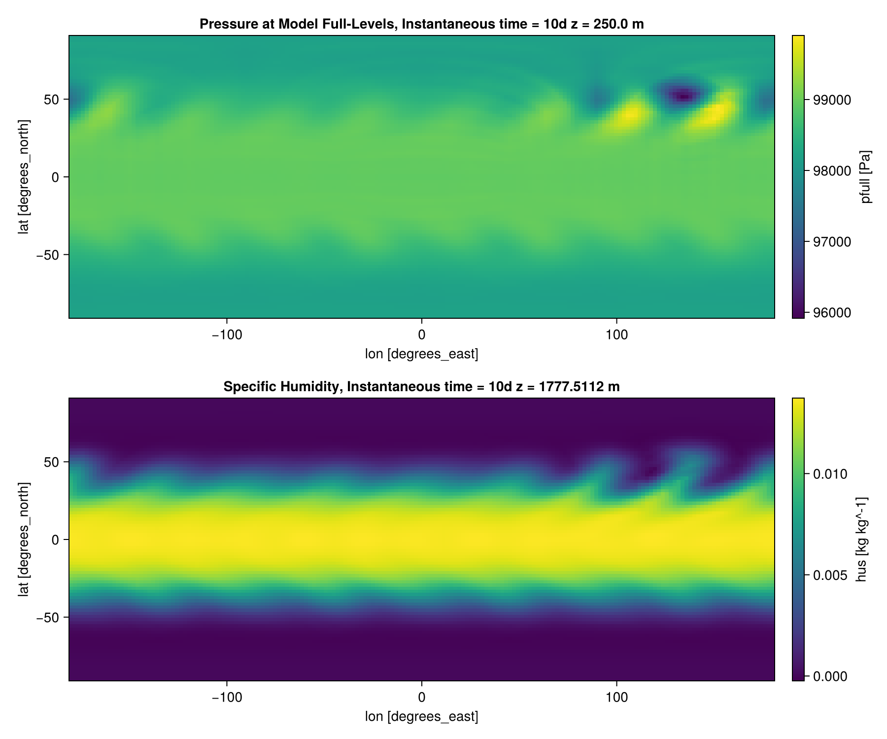

Example: Moist Baroclinic Wave
This example runs a complete global simulation in a few minutes on a laptop: the moist baroclinic wave of [2], with the moisture profile of the 2016 Dynamical Core Model Intercomparison Project. The initial state holds a midlatitude jet in each hemisphere, in balance with the pressure and temperature fields, plus a small wind perturbation centered at 20°E, 40°N. Over about ten days the perturbation grows into a chain of low- and high-pressure systems, and water vapor condenses and rains out along the fronts between them.
The page builds the model, runs it for ten days, and plots the result. It runs during the documentation build, so the figure at the end comes from the code shown here. To run it yourself, add the packages it uses to your environment (pkg> add ClimaAtmos ClimaAnalysis CairoMakie) and run the blocks in order, in the REPL or as a script.
Building the model
import ClimaAtmos as CA
FT = Float32
grid = CA.SphereGrid(FT; h_elem = 6, z_elem = 10)
model = CA.AtmosModel(
grid;
setup = CA.Setups.MoistBaroclinicWave(; deep_atmosphere = true),
microphysics_model = CA.EquilibriumMicrophysics0M(),
hyperdiff = CA.cam_se_hyperdiffusion(FT),
disable_surface_flux_tendency = true,
)Each piece sets one part of the case:
SphereGrid(FT; h_elem = 6, z_elem = 10)is a cubed sphere with 6 elements along each panel edge, about 550 km between grid points, and 10 levels up to 30 km. The levels are stretched by default (z_stretch = true): the lowest is 500 m thick (dz_bottom), and they thicken with height. Running Global Simulations explains howh_elemsets the resolution.MoistBaroclinicWavesets the initial state.deep_atmosphere = truebuilds it for the deep-atmosphere equations, whichSphereGriduses by default.EquilibriumMicrophysics0Madds moisture with the simplest microphysics: cloud condensate is diagnosed from saturation, and precipitation leaves the domain as soon as it forms. See Microphysics.cam_se_hyperdiffusionsets the numerical smoothing to the coefficients the tested YAML configurations use. See Hyperdiffusion.disable_surface_flux_tendency = truestops the surface from exchanging heat, moisture, and momentum with the air, so the wave grows from the initial state alone.
Running the simulation
The simulation writes two diagnostics once per simulated day: the pressure pfull and the specific humidity hus. default = false skips the built-in diagnostic set, which keeps the run fast and the output small. interpolation_num_points sets the longitude-latitude grid the output is written on, here 2° spacing. The vertical entry is ignored, since the output stays on the model levels:
diagnostics = CA.DiagnosticsConfig(;
default = false,
additional = (
"pfull" => (; period = "1days", reduction = "inst"),
"hus" => (; period = "1days", reduction = "inst"),
),
interpolation_num_points = (180, 90, 10),
)
simulation = CA.AtmosSimulation(
model;
dt = "1200secs",
t_end = "10days",
update_cache_every = "step",
diagnostics,
job_id = "moist_baroclinic_wave",
)
CA.solve_atmos!(simulation)The 1200 s timestep is pushing the timestep limit at this resolution. If a change to the case makes the run unstable, reduce the timestep. update_cache_every = "step" recomputes derived quantities such as pressure and temperature once per timestep instead of at every stage of the time integrator, as the tested YAML configurations do. The first run in a session spends a few minutes compiling before it starts stepping, and the log reports progress as it runs. The output goes to output/moist_baroclinic_wave/output_active. See Where output goes for the layout.
Plotting the wave
ClimaAnalysis.jl reads the NetCDF output. viz.plot! cuts each variable at the nearest available time and height and draws a longitude-latitude map:
import ClimaAnalysis
import ClimaAnalysis.Visualize as viz
import CairoMakie
simdir = ClimaAnalysis.SimDir(simulation.output_dir)
pfull = get(simdir; short_name = "pfull", reduction = "inst")
hus = get(simdir; short_name = "hus", reduction = "inst")
day = 86400 # seconds
fig = CairoMakie.Figure(size = (900, 750))
viz.plot!(fig, pfull; time = 10 * day, z = 0, p_loc = (1, 1))
viz.plot!(fig, hus; time = 10 * day, z = 1800, p_loc = (2, 1))
fig
Both panels show day 10. The top panel is the pressure on the lowest model level, about 250 m above the surface, where the lows and highs of the wave sit along the northern jet, downstream (east) of the initial perturbation. The bottom panel is the specific humidity about 1.8 km up, where the wave draws moist subtropical air poleward. The southern hemisphere starts with no perturbation, so its jet stays close to zonal.
Next steps
- Raise
h_elemto 16 withdt = "120secs"to resolve the fronts. This costs about 70 times as much, so run it on a GPU; see Running on GPUs and MPI, and Running Global Simulations for tested pairs of resolution and timestep. - Swap the setup for
DryBaroclinicWaveand dropmicrophysics_modelto compare against the dry wave. - Loading and Visualizing Output: averages, slices, and other plots of the output.
- Available Diagnostics: the variables a simulation can write.